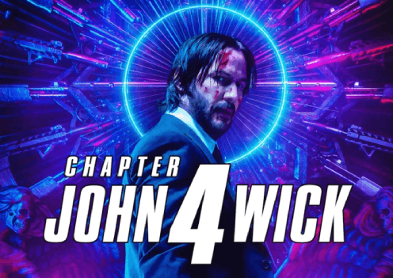

Craft narratives
that ignite inspiration , Knowledge ,and entertainment

Netflix . 12 minutes ago
Where To Watch 'Jhon Wick : Chapter 4'
There's been no official announcement regarding John Wick : Chapter 4's streaming release. However,
given it's a Lionsgate film, John Wick: Chapter 4 will eventually be released on Starz,...